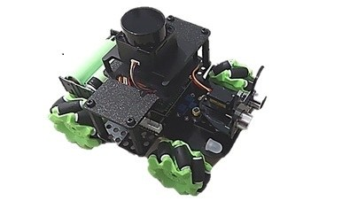
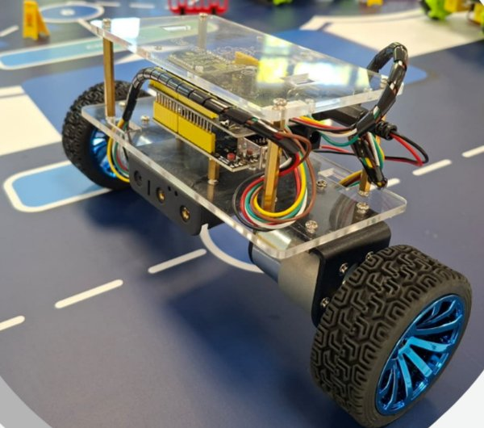
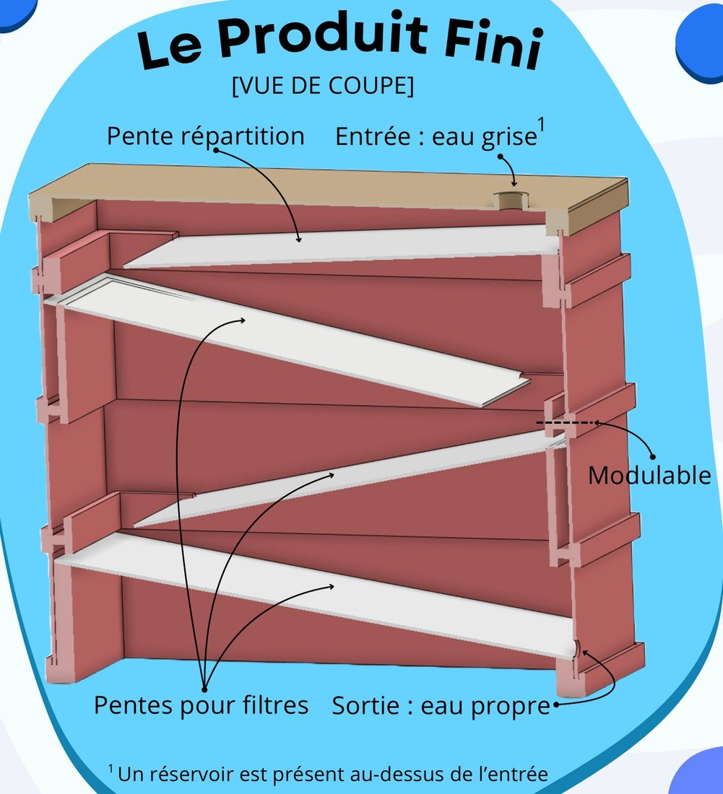
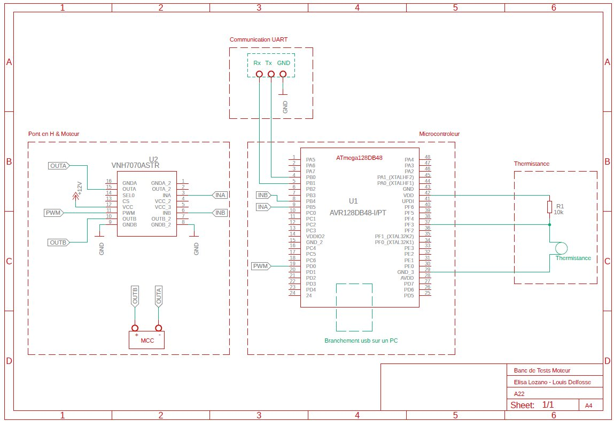
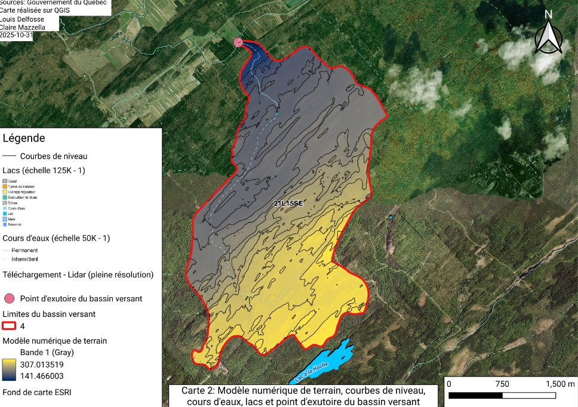

> élève-ingénieur · EIGSI La Rochelle · promo 2027
Louis Delfosse
Mécatronique & robotique
Passionné de mécatronique, et tout particulièrement de robotique. Je conçois des systèmes complets, de la CAO à la carte électronique : pièces mécaniques, PCB, code embarqué, puis tests sur le vrai prototype.
Recherche un stage de fin d'études · 6 mois à partir de janvier 2027
Compétences
Outils pratiqués en projet, du dessin à la mise en service.
Robotique
- ROS 2 Humble · Nav2 formation
- Lidar, cartographie, SLAM Python
- Commande : PD/PI, LQR, observateur MATLAB
- Arduino, ESP32, capteurs IMU robots réels
CAO & conception
- 3DEXPERIENCE / CATIA avancé
- Fusion 360 opérationnel
- SketchUp maîtrisé
- Plans, cotation, nomenclatures projets
Électronique & embarqué
- EAGLE, KiCad : schéma, routage, Gerber projets
- AVR (ATmega, AVR128DB48) C bas niveau
- PWM, ADC, UART, interruptions registres
- Pont en H, capteurs, câblage prototypes
Programmation
- C embarqué · Arduino
- Python · MATLAB
- Git · pytest
- SQL · Java
- QGIS (SIG)
Fabrication & atelier
- Impression 3D SLS (nylon), FDM
- Tour, fraiseuse, CNC, découpe laser
- Assemblage & contrôle dimensionnel
Langues
- Français natif
- Anglais C1 Cambridge
- Espagnol B2
Projets
Une fiche par projet : contexte, mon rôle, ce que j'ai fait et les résultats.

Préhenseur mécatronique — Mecatro-bot
Un bras robotisé avec sa pince, conçu de zéro pour trier des objets selon un cycle imposé : CAO complète, pièces imprimées en SLS, cartes électroniques sous EAGLE.
Lire la fiche →
Cartographie et localisation par lidar
Un robot Mecanum (ESP32) équipé d'un lidar LD06 : affichage des scans, cartes grille et vectorielles, recalage de scans et bases du SLAM.
Lire la fiche →
Du pendule inversé au robot auto-équilibré
Modélisation et commande d'un pendule inversé sous MATLAB (PD, LQR), puis essais de retour d'état sur un vrai robot auto-équilibré Arduino.
Lire la fiche →
ROS 2 et navigation autonome Nav2
Nœuds, topics, services et actions en Python, puis navigation d'un TurtleBot3 en simulation : AMCL, SLAM Toolbox, planner et behavior trees.
Lire la fiche →
Guider le bouchage de tubes en réalité augmentée
Pour EDF : aider l'opérateur à trouver le bon tube parmi des milliers. D'une projection Poka-Yoke à une chaîne CAO → réalité augmentée.
Lire la fiche →
Robot guide suiveur de ligne
Un robot qui suit une ligne pour faire visiter l'école, avec IHM et arrêt d'urgence. J'ai réalisé les schémas électroniques du robot complet sous KiCad.
Lire la fiche →
Mangeoire connectée pour oiseaux
Une mangeoire à capteurs installée dans un arbre de l'école. J'ai conçu la fixation et le système qui descend l'eau et la nourriture à hauteur d'enfant.
Lire la fiche →
Libert'Eau, filtre pour voilier
Un filtre modulable pour réutiliser les eaux grises et l'eau de pluie à bord. J'ai géré le projet et l'équipe de 5, puis nous sommes allés jusqu'au prototype et à l'étude d'industrialisation.
Lire la fiche →
Table élévatrice pour monoplace
Une table à ciseaux qui lève 300 kg avec un coefficient de sécurité de 6 : cinématique, vérin hydraulique, vérifications sous RDM 7.
Lire la fiche →
Carte PCB et microcontrôleur AVR
Une carte routée sous EAGLE jusqu'aux fichiers Gerber, et du C bas niveau sur AVR : PWM, ADC, UART, interruptions, banc moteur.
Lire la fiche →
Contrôle non destructif simulé sous COMSOL
Simulation multiphysique d'une thermographie infrarouge active : une bobine chauffe une plaque par courants de Foucault pour révéler un défaut caché.
Lire la fiche →
Cartographie d'un bassin versant
Délimitation d'un bassin versant québécois, caractéristiques physiques et cartes sous QGIS.
Lire la fiche →Parcours
// expériences
-
juin – sept. 2026
Stage élève-ingénieur — EDF, CNPE de Chinon
Service Ingénierie Fiabilité. Bilan matériel des condenseurs, analyse de l'état des équipements, recommandations de maintenance et documentation technique en milieu nucléaire.
-
mai – juil. 2025
Stage technicien — Pochet du Courval
Verrerie industrielle automatisée (luxe), production en continu. Analyse des arrêts d'une ligne, actions correctives et suivi des performances.
// formation
-
2024 – 2027
EIGSI La Rochelle — cycle ingénieur
Dominante mécatronique.
-
2025
Université Laval, Québec — semestre d'échange
Génie des eaux : mécanique des fluides, hydraulique, instrumentation, QGIS.
-
2021 – 2024
EIGSI La Rochelle — cycle préparatoire intégré
Contact
Une offre de stage, une question sur un projet ? Écrivez-moi.